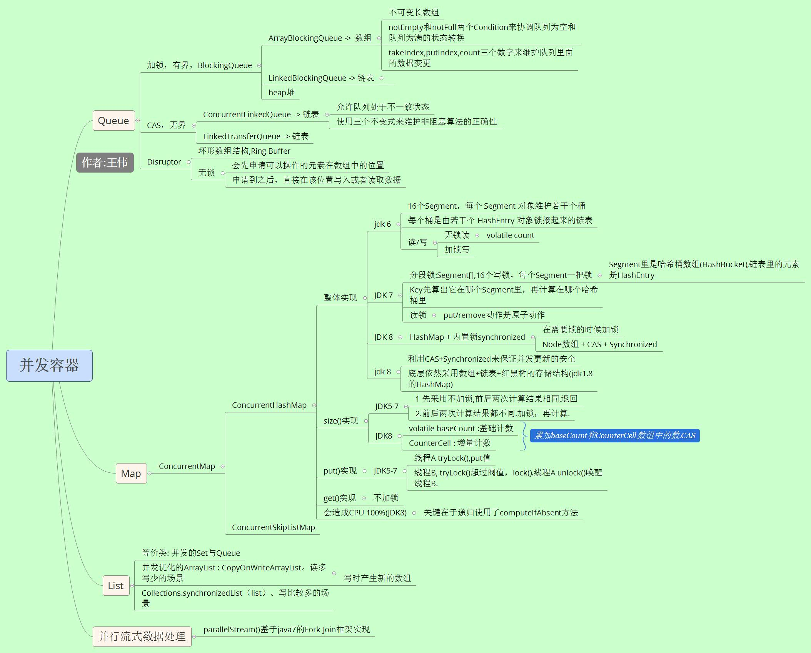

Java并发容器总结

参考:
1. 关于Java集合的小抄 白衣
2. 谈谈ConcurrentHashMap1.7和1.8的不同实现 占小狼
3. 高性能队列——Disruptor
4. 非阻塞算法在并发容器中的实现 程晓明
5. 从volatile解读ConcurrentHashMap（jdk1.6.0）无锁读 绫萱
6. JAVA并发容器代码随读 BucketLi
7. 聊聊并发（四）深入分析ConcurrentHashMap 方 腾飞
8. Java8 新特性之流式数据处理 深蓝至尊
9. 不止JDK7的HashMap，JDK8的ConcurrentHashMap也会造成CPU 100% 朱小厮 朱忠华